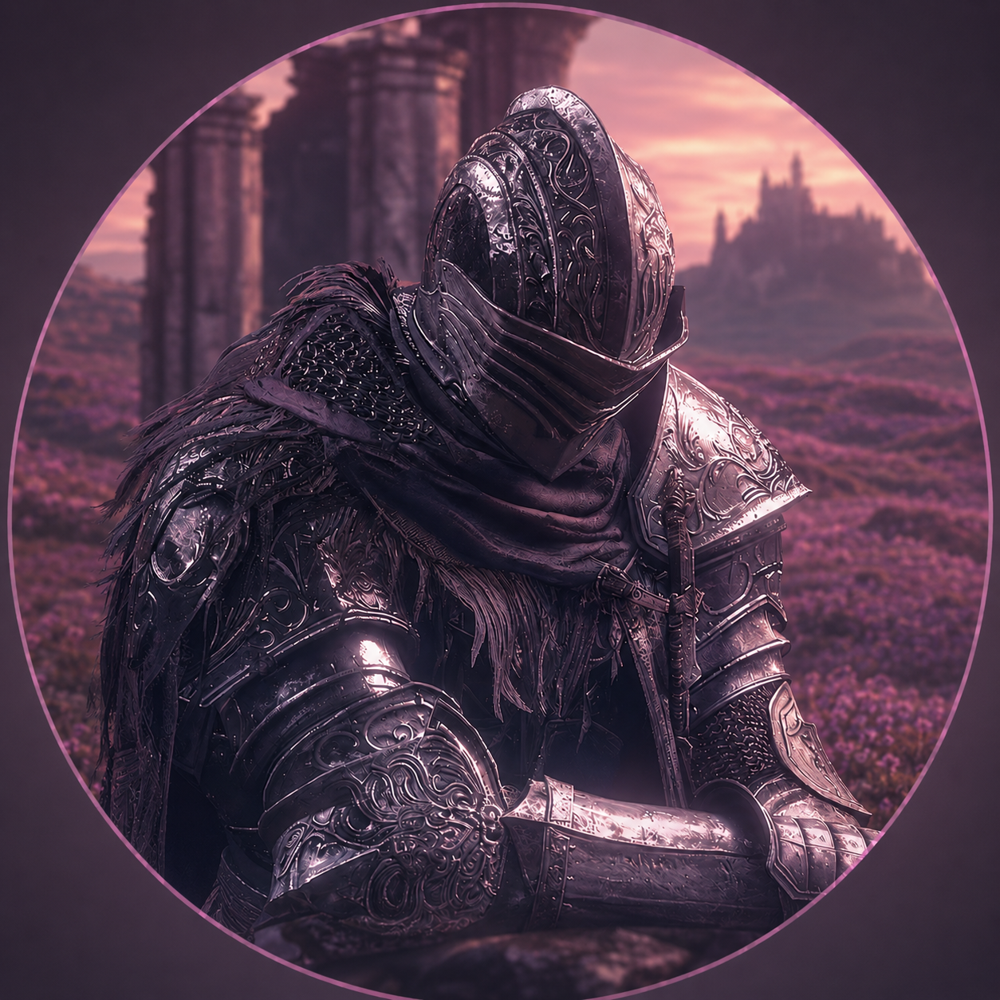
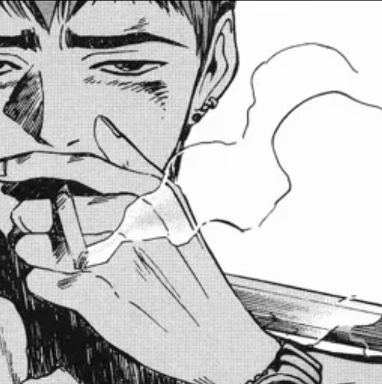
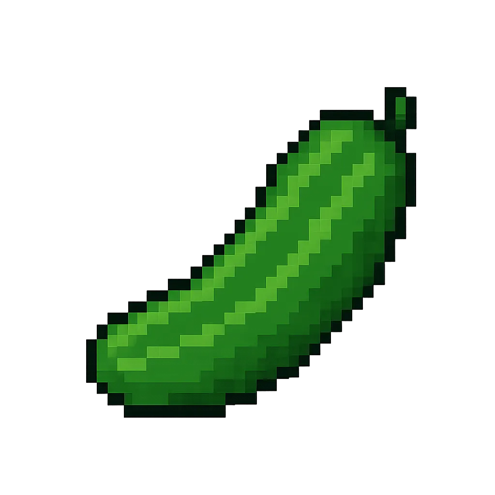

Un serveur FiveM whitelist entièrement pensé autour de la vie d'un camping — loin des poursuites sans fin et du RP illégal contre police qui saturent la communauté.
Camping RP est né d'une envie simple : proposer autre chose. Nous en avions assez de voir le roleplay FiveM se résumer, serveur après serveur, à un même schéma — course-poursuites, RP illégal, affrontements contre la police. Camping RP prend le contre-pied et mise sur une vie de camping réaliste, chaleureuse et immersive, où chaque joueur trouve sa place sans avoir besoin de tirer un coup de feu pour exister.
Nous apportons quelque chose de nouveau à la communauté FiveM : un serveur bien structuré, pensé dans les moindres détails, porté par un lore exceptionnel qui va bien au-delà d'un simple décor. Le Camping des Pins cache une trame paranormale profonde, à la fois mystérieuse et rigoureusement cohérente, qui évoluera avec le temps et avec vous.
Ce que vous découvrez aujourd'hui n'est que le début d'une bien plus grande aventure. Installez votre tente, prenez vos marques, et laissez-vous porter par l'histoire du Camping des Pins.
Les personnes derrière Camping RP, au quotidien.

Créateur du projet Camping RP. Il supervise l'ensemble du serveur : développement, direction artistique, économie, lore et vision d'ensemble. C'est lui qui a posé la première pierre de l'Île des Pins — et qui veille à ce que chaque élément du serveur reste fidèle à cette vision.

Le bras droit du fondateur. Akira gère au quotidien tous types de situations sur le serveur — organisation, décisions, arbitrages — et s'assure que le projet avance sur tous les fronts, à la fois côté équipe et côté communauté.

Mappeur du projet. C'est lui qui a entièrement créé la map du Camping des Pins et qui gère toute la partie 3D du serveur — du moindre sentier forestier jusqu'aux emplacements de tente, chaque recoin du camping porte sa patte.
Camping des Pins · Île des Pins, France
Camping RP WL est un serveur FiveM whitelist +18, centré sur un univers de camping réaliste situé en France, sur l'Île des Pins. Le serveur propose une économie réaliste, une vie de camping cohérente et une trame principale autour du paranormal.
L'objectif de Camping RP est de proposer un RP simple, agréable, immersif, et centré sur la vie d'un camping. Le Camping des Pins n'est ni magique ni fantastique : la trame paranormale repose sur une approche scientifique et pourra être interprétée différemment selon les personnages.
Le staff encadre le serveur, règle les litiges et applique les sanctions nécessaires. Les décisions du staff doivent être respectées. Les désaccords doivent être discutés dans les espaces prévus à cet effet, et non directement en scène ou publiquement.
Les sanctions sont progressives :
L'avertissement 2 constitue le dernier avertissement et peut notamment entraîner une exclusion d'une scène RP ou un bannissement temporaire. Le staff peut adapter une sanction selon la gravité, la répétition, l'impact sur le serveur et les circonstances de la faute.
Les preuves vidéo sont fortement recommandées en cas de litige (Medal, OBS...). Elles permettent de faciliter le traitement d'un dossier et peuvent innocenter un joueur.
Tout joueur souhaitant streamer doit créer un ticket afin d'obtenir le grade Streamer et connaître le règlement spécifique. Le streamer est responsable de son comportement, de ses viewers et de son chat. Le StreamHack et le Métagaming sont interdits, tout comme les comportements irrespectueux envers les joueurs, le staff ou le serveur. Le nom Camping RP doit apparaître dans le titre du live selon les consignes du staff.
Jouer la peur et prendre en compte le danger auquel votre personnage est confronté.
Jouer correctement la douleur et les conséquences physiques d'une blessure, d'un accident ou d'un choc.
Imposer une action ou une situation à un autre joueur sans lui laisser de réelle possibilité de réaction.
Chercher à gagner une scène à tout prix, notamment en exploitant le règlement, l'environnement ou une incohérence du jeu au détriment du RP.
Tuer un joueur sans raison ou justification RP valable.
Frapper ou agresser un joueur sans raison RP valable.
Utiliser volontairement un véhicule comme une arme pour renverser ou tuer un joueur sans justification RP valable.
Enchaîner les sauts afin de se déplacer plus rapidement ou d'éviter des tirs.
Effectuer des changements de direction rapides et irréalistes afin d'éviter des tirs ou des attaques.
Considérer qu'un environnement est vivant et peuplé, même lorsque peu ou aucun joueur n'est présent.
Privilégier la qualité et l'intérêt d'une scène plutôt que de chercher systématiquement à la gagner.
Mélanger des informations ou des conversations HRP avec une scène RP (aussi appelé vocal HRP ou double vocal).
Utiliser les informations obtenues en regardant le stream d'un joueur afin d'influencer son propre RP.
Utiliser une information obtenue HRP pour influencer les actions ou les décisions de son personnage en RP.
Récupérer les biens d'un joueur sans justification ou interaction RP valable.
Considérer que la vie de votre personnage a une réelle valeur, et qu'il cherche naturellement à la préserver.
Quitter volontairement une scène ou ne plus se connecter afin d'éviter ses conséquences RP.
Exploiter volontairement un bug ou un glitch du jeu ou d'un script afin d'obtenir un avantage ou d'accéder à une zone normalement inaccessible.
Vous ne pouvez pas reconnaître une personne uniquement grâce à sa voix, sa tenue ou son véhicule si votre personnage n'a aucune raison RP de la reconnaître. Une reconnaissance est possible lorsqu'il existe une connaissance personnelle ou un signe distinctif réellement connu par votre personnage.
Le RP se déroule au Camping des Pins, situé en France sur l'Île des Pins. L'univers doit rester réaliste, cohérent, immersif et fidèle à l'ambiance d'un camping.
Chaque personnage doit rester cohérent avec son âge, son histoire, sa fonction et les informations présentées lors de la WL. Les événements vécus en RP peuvent faire évoluer progressivement son comportement et sa manière d'agir.
Le RP doit rester fluide et naturel. Les réactions absurdes, les comportements hors contexte, le HRP en scène et les actions cassant volontairement l'ambiance sont interdits.
Chaque scène doit laisser une réelle possibilité de réaction aux autres joueurs. Le but est de créer du jeu et de laisser place aux idées et à l'improvisation, et non de forcer une scène pour obtenir un résultat précis.
Face à une menace crédible ou à une autorité légitime, votre personnage doit réagir de manière prudente et réaliste. Cela concerne notamment les agents de sécurité et les événements liés à la trame paranormale.
Les blessures, la douleur, la fatigue et les malaises doivent être joués de manière cohérente avec la situation.
Un personnage inconscient, ou sorti d'une situation ayant entraîné une perte de connaissance, ne peut pas utiliser les informations qu'il n'aurait pas pu connaître pendant cette période.
L'alcool doit être joué de manière réaliste. L'état d'ébriété doit notamment se ressentir dans la parole, la démarche, la lucidité et les décisions prises par le personnage.
Le couple RP est autorisé s'il reste cohérent, respectueux, crédible et adapté à l'ambiance du serveur. Il ne doit cependant pas empêcher ou brider les scènes RP.
Toute scène à caractère sexuel ou érotique est interdite, y compris lorsqu'elle est jouée uniquement en vocal, écrit ou sous-entendue de manière explicite.
Les tenues doivent être cohérentes avec l'univers du camping. Il est recommandé de changer régulièrement de tenue afin de renforcer l'immersion. Les vêtements sont gratuits : votre personnage est considéré comme arrivant au camping avec sa valise et plusieurs tenues.
Les personnages utilisant des tailles différentes sont autorisés s'ils sont demandés lors de la WL, justifiés par le personnage et cohérents avec l'univers.
Les personnages mineurs sont autorisés, mais doivent être joués avec cohérence, logique et maturité. Le camping étant un lieu de vacances, la présence de familles est naturellement cohérente avec l'univers.
Le Camping des Pins comporte des routes étroites, des virages serrés et des zones fréquentées. La conduite doit donc rester prudente et adaptée à l'environnement. Les excès de vitesse abusifs, les manœuvres dangereuses, les chocs volontaires, la conduite agressive et l'utilisation abusive d'un véhicule comme arme sont interdits.
Les camping-cars et autres véhicules doivent être utilisés de manière logique et adaptée au thème du serveur. Un camping-car étant un véhicule lourd et difficile à manœuvrer, sa conduite doit rester cohérente avec ses caractéristiques.
L'économie du serveur se veut réaliste et fonctionne uniquement en espèces.
Des activités comme la pêche permettent de gagner de l'argent, mais le farm abusif est interdit. Il est interdit de réaliser une activité uniquement dans le but d'accumuler de l'argent sans véritable logique RP.
Le serveur repose sur une véritable vie de camping : activités, échanges, circulation, sécurité, loisirs et ambiance collective. Chaque joueur doit contribuer à faire vivre cet environnement.
Les règles internes du Camping des Pins doivent être respectées par tous les vacanciers. Leur non-respect peut entraîner un rappel à l'ordre, une sanction RP ou une expulsion du camping.
La sécurité veille au calme du camping, gère les conflits et fait respecter le règlement interne. Elle peut intervenir en cas d'abus ou de comportement problématique, et effectuer une fouille lorsque la situation le justifie. En cas de faute grave ou répétée, une expulsion du camping peut être décidée. Le camping est avant tout un lieu de détente : les joueurs viennent pour passer de bonnes vacances, pas pour créer des problèmes.
Les conflits entre vacanciers doivent rester cohérents avec l'ambiance du camping. Les violences graves ou répétées doivent avoir une véritable justification RP.
Les EMS du serveur représentent un seul rôle : Maître-Nageur / Secouriste. Ils assurent les premiers secours, les soins, les interventions en cas d'accident et la prise en charge des urgences.
Le gérant ou propriétaire du camping assure la gestion globale du camping et l'arbitrage final.
Veille au calme, gère les conflits, fait respecter le règlement interne et intervient en cas d'abus ou de comportement problématique.
Organise les événements, jeux, concours et activités du camping.
Organise les randonnées, sorties et excursions RP en dehors du camping.
Premier contact avec les arrivants. Attribue les emplacements, oriente, informe et aide à l'installation.
Tient le bar ou la buvette, sert les vacanciers et participe à la vie sociale du camping.
S'occupe de l'ambiance musicale lors des soirées et événements.
Surveille la baignade et les activités nautiques, intervient en cas d'accident ou d'urgence.
Le rôle principal du serveur : profite du camping, participe aux activités et contribue à la vie du lieu.
Le paranormal constitue une trame centrale du serveur. Il ne s'agit pas simplement d'un élément décoratif : il peut influencer le RP et l'évolution de l'histoire.
La trame repose sur une approche scientifique. Le serveur n'est ni magique ni fantastique. Les personnages peuvent croire aux esprits ou avoir leurs propres interprétations, mais la logique globale de la trame reste scientifique.
Certaines scènes liées à la trame pourront imposer des consignes particulières. Celles-ci devront être respectées par les joueurs concernés.
La trame doit être prise en compte dans les comportements, décisions et réactions des personnages. L'ignorer volontairement peut entraîner une sanction HRP.
Les joueurs peuvent interpréter les événements paranormaux selon les connaissances et croyances de leur personnage. Ils ne peuvent cependant pas inventer de faits, pouvoirs ou éléments de trame qui n'ont pas été introduits ou validés par le staff.
Des annonces seront communiquées lorsque de nouvelles mécaniques ou conséquences importantes liées à la trame seront mises en place.
La Mort RP est possible sur le serveur. Elle doit toujours être cohérente, justifiée, logique et intégrée à une véritable scène RP. Toute demande de Mort RP doit faire l'objet d'un dossier préalable.
Le staff peut également décider qu'une scène justifie une Mort RP. En cas de blessure extrêmement grave ou répétée, les Maîtres-Nageurs / Secouristes peuvent signaler une situation pouvant justifier une Mort RP au staff. La décision finale appartient au staff. La trame paranormale pourra également, au fur et à mesure de son évolution, entraîner la Mort RP de certains personnages.
Le Wipe est autorisé. Après un Wipe, aucun bien ou avantage ne peut être transféré d'un personnage à un autre et aucun contournement n'est autorisé.
Un ticket doit être ouvert avec un dossier comprenant la raison du Wipe, la scène justifiant le départ du personnage du camping, ainsi que le background, les objectifs et les informations du nouveau personnage — comme lors de la WL écrite.
Chaque action importante peut avoir des conséquences durables. Le serveur valorise les choix crédibles et la cohérence des conséquences RP.
Le non-respect du règlement HRP ne constitue pas une Mort RP. Il entraîne une sanction du staff pouvant aller jusqu'au bannissement, selon la gravité des faits.
En rejoignant Camping RP WL et en jouant au Camping des Pins, vous reconnaissez avoir lu, compris et accepté ce règlement. Vous vous engagez à respecter le staff, les autres joueurs, l'univers du serveur, les scènes RP, les règles du serveur et les conséquences de vos actions RP.